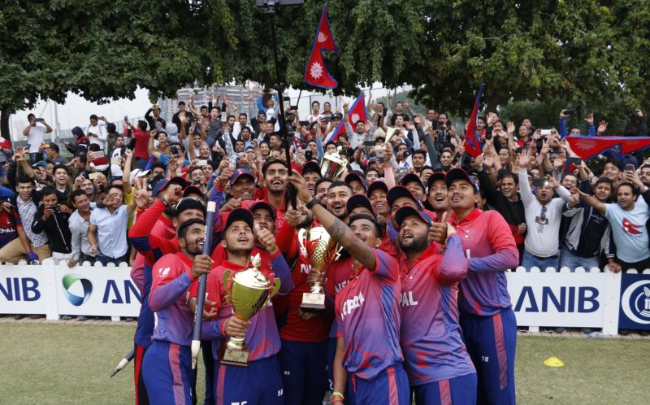

Minister of Youth and Sports Jagat Bahadur Sunar, National Sports Council Vice-president Pitambar Timsina, Member Secretary Keshab Kumar Bista and Chairman of National Assembly Ganesh Prasad Timilsina, along with hundreds of fans and media, received cricketers, who were provided with a red-carpet welcome for the first time at TIA. Nepal came from behind to defeat the UAE 2-1 in both ODI and T20 series to clinch a historic series win. Teenagers Rohit Kumar Paudel and Sundeep Jora became the youngest cricketers to score half centuries in ODI and T20, respectively, while skipper Paras Khadka became the first Nepali player to score a century in ODI. Following the series against the UAE, Nepal are in the 15th position on ICC ODI ranking. Khadka lauded his team’s efforts. “Each member of the team, especially youngsters, took the responsibility of winning games for the team,” said Khadka, who was optimistic of playing home series in the near future. “I have information that International Cricket Council representative is coming to Kathmandu to assess the condition of TU stadium and we hope to host an international series soon,” he added. Khadka also credited batting consultant Umesh Patwal for the huge transformation in batting. “We have just started under him and already there is a lot of change in the team composition and the attitude of batsmen. We have a long way to go and we believe that we are on the right track,” added Khadka. NSC Member Secretary Bista said the sports’ governing body was planning to recommend that the government reward Rs 5 lakh to each member of the team. “These players have made the nation proud and they deserve to be honoured,” he added. NA Chairman Timilsina handed over Rs 10,000 each to the cricketers at the airport. National team head coach Jagat Tamatta said cricketers deserved a better treat. “Nobody understands problems of the players. They have not received their salaries for a long time,” Tamatta added. “It’s high time the nation pays back these cricketers and works for development of the sport,” he said.
Nepal national cricketers today received heroes’ welcome at Tribhuvan International Airport upon arrival after a historic double — winning both One Day International and Twenty20 International series against the United Arab Emirates in Dubai.
Minister of Youth and Sports Jagat Bahadur Sunar, National Sports Council Vice-president Pitambar Timsina, Member Secretary Keshab Kumar Bista and Chairman of National Assembly Ganesh Prasad Timilsina, along with hundreds of fans and media, received cricketers, who were provided with a red-carpet welcome for the first time at TIA. Nepal came from behind to defeat the UAE 2-1 in both ODI and T20 series to clinch a historic series win. Teenagers Rohit Kumar Paudel and Sundeep Jora became the youngest cricketers to score half centuries in ODI and T20, respectively, while skipper Paras Khadka became the first Nepali player to score a century in ODI. Following the series against the UAE, Nepal are in the 15th position on ICC ODI ranking. Khadka lauded his team’s efforts. “Each member of the team, especially youngsters, took the responsibility of winning games for the team,” said Khadka, who was optimistic of playing home series in the near future. “I have information that International Cricket Council representative is coming to Kathmandu to assess the condition of TU stadium and we hope to host an international series soon,” he added. Khadka also credited batting consultant Umesh Patwal for the huge transformation in batting. “We have just started under him and already there is a lot of change in the team composition and the attitude of batsmen. We have a long way to go and we believe that we are on the right track,” added Khadka. NSC Member Secretary Bista said the sports’ governing body was planning to recommend that the government reward Rs 5 lakh to each member of the team. “These players have made the nation proud and they deserve to be honoured,” he added. NA Chairman Timilsina handed over Rs 10,000 each to the cricketers at the airport. National team head coach Jagat Tamatta said cricketers deserved a better treat. “Nobody understands problems of the players. They have not received their salaries for a long time,” Tamatta added. “It’s high time the nation pays back these cricketers and works for development of the sport,” he said.